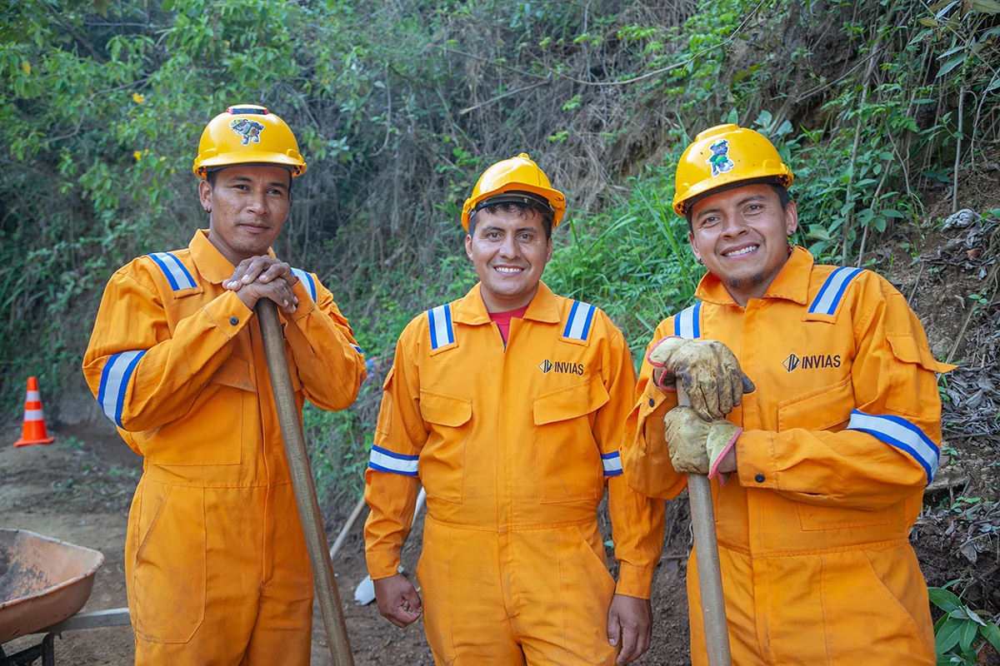

Quiero conocer el programa
Información para comunidades rurales, familias y ciudadanía interesada en conocer el alcance y los beneficios de Caminos del Tigre.
Explorar el programaCaminos del Tigre
Los caminos hacen parte de nuestra vida: por ellos llegan los alimentos, las personas van a estudiar, las familias acceden a servicios y las regiones se encuentran.
Fotografía institucional · Invías
Encuentra tu ruta
Selecciona la opción que mejor describe tu consulta. Cada ruta presenta únicamente la información necesaria.
Información para comunidades rurales, familias y ciudadanía interesada en conocer el alcance y los beneficios de Caminos del Tigre.
Explorar el programaConsulta el proceso y prepara la información básica antes de ingresar a la aplicación de registro.
Preparar el registroEl programa
Caminos del Tigre es un programa del Gobierno nacional que busca mejorar la conectividad de Colombia, con especial atención a las vías rurales y a las conexiones entre comunidades, municipios y regiones.
Conocer más
Acción principal
Ingresa a la aplicación para registrar la necesidad vial de tu territorio.